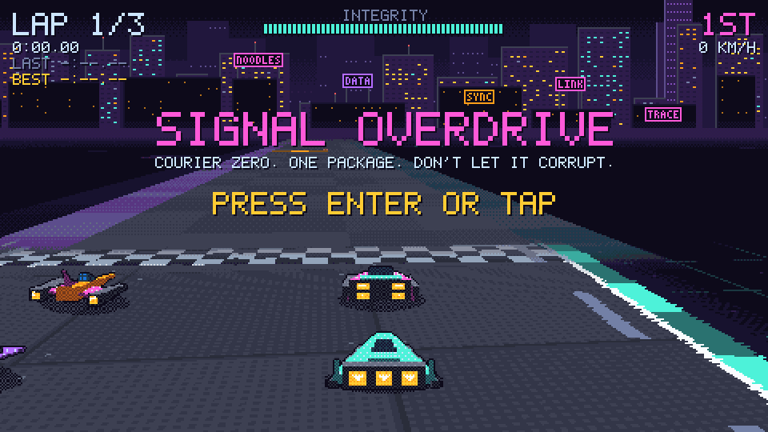
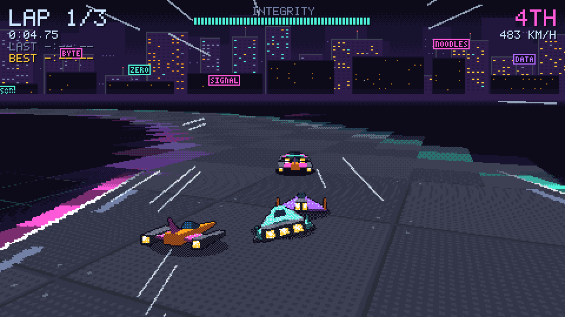
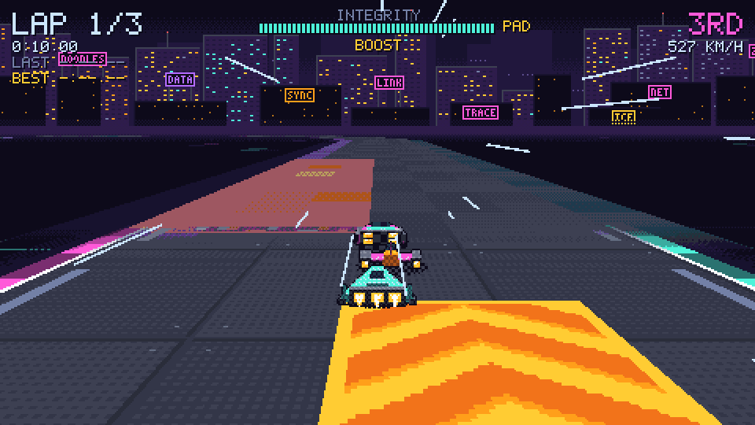
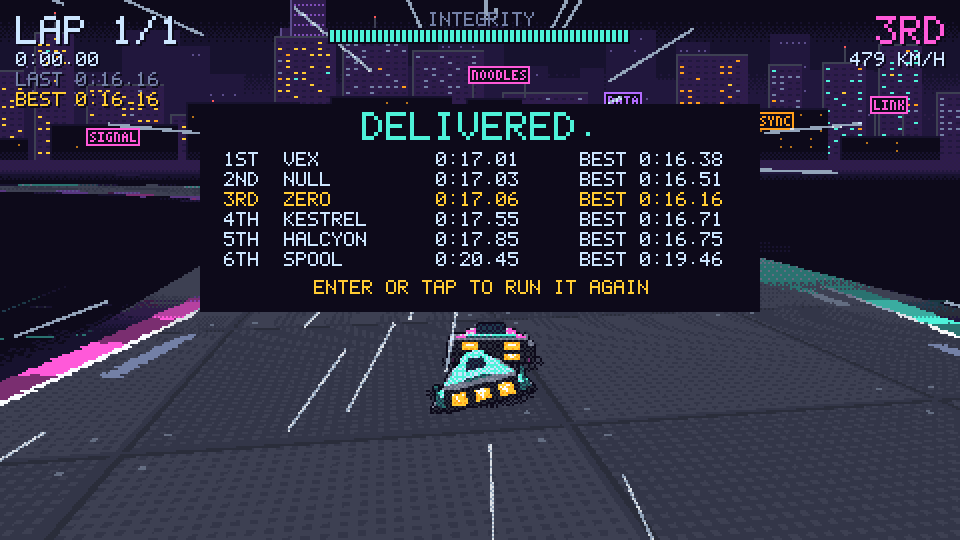
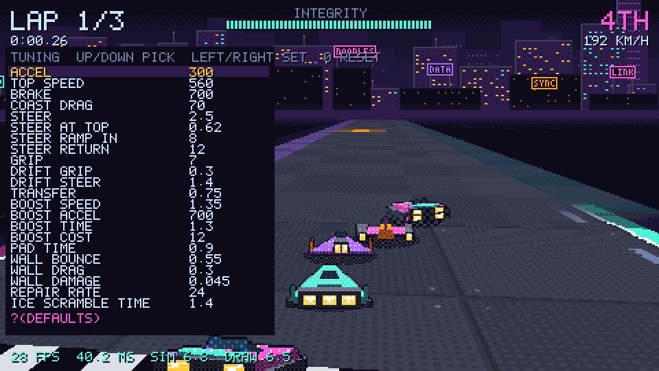
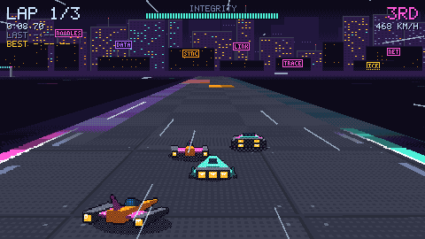

An F-Zero style racer in the Crash The Stack world, built to answer one question: does it feel good enough to become a game? You're Zero, a data courier. Your cargo's integrity is the energy meter: boosting spends it, walls cost it, the checksum lane restores it, and at zero the cargo is corrupt and the run is over.
The track is a Mode 7 ground plane (a fragment shader projecting a tiled track toward the horizon), the machines are sprites, and every frame goes through the Flux Harmonic palette and Bayer dither pass.
scripts/dev sigil build, then scripts/dev ./build/dev/bin/signal-overdrive from this directoryoval, a wide, gentle test track (the default), and loop, curves of
every tightness and a hairpin. Both have boost pads, the repair strip (the
"checksum lane") and ICE patches.Screenshots and a short recording are in docs/shots/, and on the hosted
site under /shots/.
| Keyboard | Gamepad | |
|---|---|---|
| Steer | Left/Right or A/D | Left stick or d-pad |
| Accelerate | Up or W | A or right trigger |
| Brake | Down or S | B or left trigger |
| Boost (from lap 2) | Space | X |
| Drift (hold) | Shift or C | LB or RB |
| Start | Enter or Space | Start or A |
| Restart | R | Back |
| Tuning overlay | Tab | |
| Palette, dither | P, / | |
| FPS, frame graph, sound readout | F3 | |
| Print the hitch log (console) | F4 |
On a phone the machine accelerates by itself. Three schemes, picked with
the SCHEME button (top left) or ?touch=zones|drag|stick:
F3 (or ?fps) shows three lines and a graph at the bottom:
60 FPS 16.7 MS SIM 1.2 DRAW 2.4: frames a second, the frame's interval,
and the CPU's share in ms: SIM is the race, DRAW is building the frame.
A slow frame with small SIM and DRAW is the GPU's.MAX 34MS HITCH 3 AUD 1.8MS F4 LOG: the longest frame in the last three
seconds, how many frames have run over 33 ms (a hitch), and the sound's
own ms a frame. F4 prints every hitch with its SIM, DRAW, AUDIO and
garbage collections to the browser console.SAB 250MS UR 0 CUE WORKLET 0: the audio stream's mode (SAB is the best:
off the main thread with shared memory; MSG works; SPROC is on the main
thread, the worst), the queue, UR the underruns (times the device ran
dry: each is a hitch you hear), and the cue mode with its lag.If the sound hitches, the numbers that say why: UR rising means the
queue ran dry (a deeper ?audiodepth= will help); red bars with a large
SIM, DRAW or AUD point at the game; red bars with small ones point at the
GPU or the machine being busy.
Tab opens the overlay: Up/Down pick a knob, Left/Right change it (hold to
repeat), 0 resets it. The overlay's last line is the query string for the
current values, and every knob takes a URL parameter of the same name, so
"grip 8.5 felt right" is ?grip=8.5. Natively, the same as
--grip=8.5. Knobs that change the race (track, laps, rivals, rival pace) restart
it on the grid.
Other parameters: ?track=oval|loop (the same as track=0|1), ?mute,
?audiodepth=MS (the engine sound's queue, default 250), ?cues=0 (the one-shot sounds in
the stream instead of as cues, the old way), ?hitchlog (every frame over 33 ms to the console),
?touch=zones|drag|stick, ?autopilot (the player drives the racing line),
?start (skip the title), ?fps (the F3 readout from the start).
The knobs, from signal-overdrive --knobs (units are world texels, seconds and radians; a texel is about 25 cm, so 560 texels/s is 504 km/h):
| Knob (URL parameter) | Group | Default | Range | Step |
|---|---|---|---|---|
accel ACCEL |
handling | 300 | 50 to 1200 | 10 |
top TOP SPEED |
handling | 560 | 200 to 1200 | 10 |
brake BRAKE |
handling | 700 | 100 to 2000 | 50 |
coast COAST DRAG |
handling | 70 | 0 to 400 | 5 |
steer STEER |
handling | 2.5 | 0.5 to 6 | 0.05 |
steer-high STEER AT TOP |
handling | 0.62 | 0.1 to 1.5 | 0.02 |
steer-in STEER RAMP IN |
handling | 8 | 1 to 60 | 1 |
steer-out STEER RETURN |
handling | 12 | 1 to 60 | 1 |
grip GRIP |
handling | 7 | 0.5 to 30 | 0.25 |
drift DRIFT GRIP |
handling | 0.3 | 0 to 1 | 0.02 |
drift-steer DRIFT STEER |
handling | 1.4 | 1 to 3 | 0.05 |
transfer TRANSFER |
handling | 0.75 | 0 to 1 | 0.05 |
boost-speed BOOST SPEED |
handling | 1.35 | 1 to 2 | 0.05 |
boost-accel BOOST ACCEL |
handling | 700 | 0 to 3000 | 50 |
boost-time BOOST TIME |
handling | 1.3 | 0.2 to 4 | 0.1 |
boost-cost BOOST COST |
handling | 12 | 0 to 50 | 1 |
pad-time PAD TIME |
handling | 0.9 | 0 to 3 | 0.1 |
bounce WALL BOUNCE |
handling | 0.55 | 0 to 1.2 | 0.05 |
wall-drag WALL DRAG |
handling | 0.3 | 0 to 1 | 0.05 |
wall-damage WALL DAMAGE |
handling | 0.045 | 0 to 0.3 | 0.005 |
repair REPAIR RATE |
handling | 24 | 0 to 100 | 2 |
ice-time ICE SCRAMBLE TIME |
handling | 1.4 | 0 to 5 | 0.1 |
radius RADIUS |
handling | 9 | 4 to 30 | 1 |
overspeed-drag OVERSPEED DRAG |
handling | 240 | 0 to 2000 | 20 |
track TRACK (0 OVAL 1 LOOP) |
race | 0 | 0 to 1 | 1 |
laps LAPS |
race | 3 | 1 to 9 | 1 |
rivals RIVALS |
race | 5 | 0 to 5 | 1 |
rival-pace RIVAL PACE |
race | 0.97 | 0.7 to 1.2 | 0.01 |
boost-lap BOOST FROM LAP |
race | 2 | 1 to 9 | 1 |
bump BUMP |
race | 0.6 | 0 to 1 | 0.05 |
fov FOV |
camera | 1.15 | 0.6 to 2 | 0.05 |
cam-height CAM HEIGHT |
camera | 40 | 6 to 90 | 1 |
cam-dist CAM DIST |
camera | 92 | 20 to 240 | 2 |
pitch PITCH |
camera | 0.16 | -0.3 to 0.7 | 0.01 |
horizon HORIZON |
camera | 80 | 30 to 180 | 1 |
cam-lag CAM LAG |
camera | 0.35 | 0 to 0.95 | 0.05 |
sprite-size MACHINE SIZE |
camera | 18 | 8 to 60 | 1 |
speed-fov FOV AT SPEED |
camera | 0.18 | 0 to 0.8 | 0.02 |
speed-pull PULL BACK AT SPEED |
camera | 12 | 0 to 60 | 1 |
speed-lines SPEED LINES |
look | 1 | 0 to 1 | 0.1 |
fog FOG |
look | 1 | 0 to 1 | 1 |
fog-start FOG START |
look | 900 | 100 to 4000 | 50 |
fog-end FOG END |
look | 2800 | 200 to 8000 | 100 |
far-start FAR FADE FROM |
look | 1.4 | 0.5 to 8 | 0.1 |
far-end FAR FADE TO |
look | 3.2 | 0.5 to 12 | 0.1 |
dither DITHER |
look | 1 | 0 to 1 | 1 |
spread SPREAD |
look | 8 | 0 to 64 | 4 |
lut DITHER BY LOOKUP |
look | 1 | 0 to 1 | 1 |
palette PALETTE |
look | 0 | 0 to 1 | 1 |
src/signal/mode7/ the Mode 7 camera and renderer (nothing racing-specific;
the seed of a later substratic-mode7 package)src/signal/handling.sgl one machine's handling, pure, with testssrc/signal/track.sgl where a point is on a track; track/oval-data.sgl and track/loop-data.sgl are generatedsrc/signal/race.sgl the grid, laps, rivals, the finish and corrupt cargosrc/signal/scene.sgl the frame: the Mode 7 pass, the dither pass, the HUDsrc/signal/lut.sgl the dither pass by lookup texture (scripts/art/gen-lut.mjs); dither.sgl is Phantom Burn's exact passsrc/signal/sound.sgl the synthesized sound; shell/audio.sgl pushes it to the devicescripts/touch-check.mjs drives the touch schemes in a headless phone viewport;
scripts/shot-web.mjs takes web screenshots; scripts/host serves the build on wg0scripts/art/ the generators for every image in assets/signal/ (node, no dependencies)Tests: scripts/dev sigil test --sgl test/test-handling.sgl (and
test-track, test-camera, test-race, test-sound).





